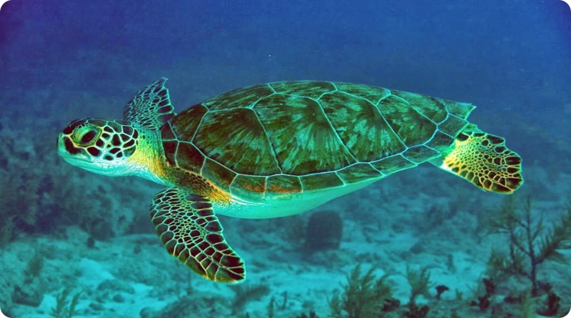

Introdução
As tartarugas são criaturas fascinantes que habitam nosso planeta há milhões de anos. Elas são conhecidas por sua carapaça dura, comportamento tranquilo e incrível capacidade de adaptação a diferentes ambientes. Neste texto, exploraremos tudo sobre as tartarugas, desde sua biologia até sua importância para os ecossistemas.
Biologia das Tartarugas
As tartarugas pertencem à ordem Testudines e são divididas em dois grandes grupos: tartarugas terrestres e tartarugas aquáticas. Suas principais características incluem:
- Carapaça e plastrão: A carapaça é a parte superior, enquanto o plastrão é a parte inferior da "armadura". Ambos protegem os órgãos internos.
- Sem dentes: Em vez de dentes, possuem bicos córneos que variam de acordo com sua dieta.
- Longevidade: Algumas espécies podem viver mais de 100 anos, como a famosa tartaruga-de-galápagos.

Espécies de Tartarugas
Existem mais de 300 espécies de tartarugas em todo o mundo. Aqui estão algumas das mais conhecidas:
- Tartaruga-de-couro (Dermochelys coriacea): A maior espécie marinha.
- Tartaruga-verde (Chelonia mydas): Conhecida por sua dieta herbívora.
- Tartaruga-de-galápagos (Chelonoidis nigra): Símbolo das Ilhas Galápagos.
- Jabuti-piranga (Chelonoidis carbonaria): Uma tartaruga terrestre comum no Brasil.
Hábitos Alimentares
As tartarugas têm dietas variadas que dependem de sua espécie:
- Tartarugas terrestres: Alimentam-se de folhas, frutas e flores.
- Tartarugas aquáticas: Podem ser herbívoras, carnívoras ou onívoras. Algumas comem algas, outras preferem peixes e crustáceos.
Reprodução
A reprodução das tartarugas é um espetáculo da natureza:
- Postura de ovos: As fêmeas cavam buracos na areia ou no solo para depositar seus ovos.
- Temperatura e sexo: A temperatura do ninho determina o sexo dos filhotes (mais quente, fêmeas; mais frio, machos).
- Primeira jornada: Ao nascer, os filhotes correm para o mar, enfrentando inúmeros perigos.
Importância Ecológica
As tartarugas desempenham papéis cruciais nos ecossistemas:
- Controle de populações: Regulam a quantidade de algas e pequenos animais.
- Dispersão de sementes: Especialmente as tartarugas terrestres, que ajudam no crescimento de novas plantas.
- Cadeia alimentar: São fonte de alimento para predadores, como tubarões e aves.
Ameaças e Conservação
Infelizmente, muitas espécies de tartarugas estão ameaçadas de extinção. As principais ameaças incluem:
- Poluição: Lixo plástico e químico prejudicam os habitats.
- Caça: Para carne, ovos e casco.
- Mudanças climáticas: Afetam a temperatura dos ninhos e os habitats marinhos.
Diversos projetos de conservação estão em andamento, como áreas protegidas e programas de reintrodução.
Curiosidades Sobre Tartarugas
- Tartarugas são mais antigas que os dinossauros!
- Elas podem prender a respiração por horas embaixo d'água.
- Algumas espécies "choram" para eliminar excesso de sal.
Conclusão
As tartarugas são verdadeiras sobreviventes da natureza. Com sua beleza única e importância ecológica, elas nos inspiram a cuidar melhor do planeta. Preservar as tartarugas é preservar nossa própria conexão com a Terra.
Sobre o Servidor "Call Tlvz?"
O servidor "Call Tlvz?" começou como um simples grupo no WhatsApp chamado "Call Talvez". A inspiração surgiu quando o criador passou a se apaixonar por tartarugas, o que levou à escolha da imagem de uma tartaruga como foto do perfil. Sem uma inspiração externa específica, o servidor evoluiu com o tema de tartarugas.
Conteúdos Especiais
- Cargos por XP
- Funções exclusivas além do staff
- Eventos de jogos
- Eventos de tartaruga
- Ranking mensal de interações
- Vips e cargos exclusivos
Tudo isso é inspirado no tema de tartarugas, criando uma experiência única e divertida para todos os membros!